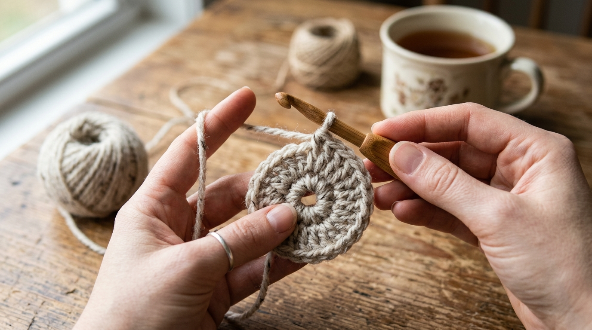
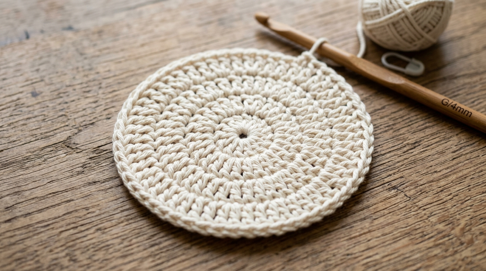

Crocheting a simple round coaster is the absolute best project for beginners. It takes less than 45 minutes, uses very little yarn, and gives you a beautiful handmade coaster to protect your wooden tables from hot chai cups!
This guide uses one clear, easy method—working in a round circle from the center outward. No complicated patterns or confusing steps—just 5 easy steps that anyone can follow!
Step-by-Step Overview
Step 1: Get Your Materials Ready
Before you begin, gather these 3 simple tools:
What You Need
• Yarn: 100% Cotton Yarn (DK or Worsted weight). Cotton is heat-resistant and absorbs water droplets!
• Crochet Hook: 4.0 mm (Size G-6) hook.
• Tools: Scissors and a yarn needle to tuck in loose ends.
Step 2: Start the Center Loop (Round 1)
We start from the center of the coaster and work in a circle.
How to do Round 1:
- Make a Magic Loop (or chain 4 and join with a slip stitch to form a small ring).
- Chain 3 (this counts as your first double crochet).
- Work 11 double crochets directly into the ring loop.
- Pull the yarn tail tight to close the center hole.
- Join with a slip stitch into the top of your starting chain-3.
Your stitch count at the end of Round 1: 12 stitches.

Step 3: Expand the Circle (Round 2)
Now we make the circle bigger so it can hold your mug.
How to do Round 2:
- Chain 3. Work 1 double crochet in the exact same stitch where you joined.
- Work 2 double crochets into EVERY stitch all the way around.
- Join with a slip stitch to the top of your starting chain-3.
Your stitch count at the end of Round 2: 24 stitches.

Step 4: Finish the Outer Edge (Round 3)
This final round brings your coaster to full size (about 4.5 inches wide).
How to do Round 3:
- Chain 3. Work 2 double crochets in the next stitch.
- Repeat this pattern around: [1 double crochet in next st, 2 double crochets in following st].
- Join with a slip stitch to the top of chain-3.
- Cut yarn leaving a 4-inch tail, pull through loop, and use your yarn needle to weave the tail securely into the back of your stitches.
Your stitch count at the end of Round 3: 36 stitches.
"By increasing stitches evenly in each round, your coaster stays flat and smooth under your favorite hot chai mug."
Step 5: Quick Wet Blocking for a Flat Finish
If your coaster curls up slightly when finished, don't worry! Here is the easy trick to make it lie 100% flat:

- Dip your coaster in water for 1 minute.
- Gently press out water with a clean towel (don't wring it).
- Lay it flat on a dry towel, press it flat into a circle, and let it dry.
- Once dry, your coaster will stay crisp, flat, and beautiful!
Frequently Asked Questions
Written by Gurdeep Sidhu
Founder of Sidhu's Views. Exploring slow living, handmade crafts, aesthetic interior styling, and creative writing.